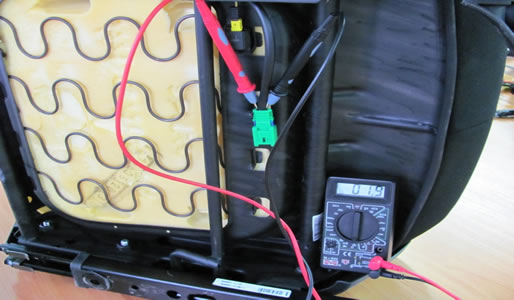
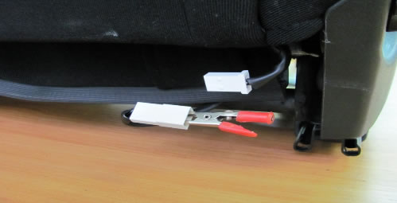
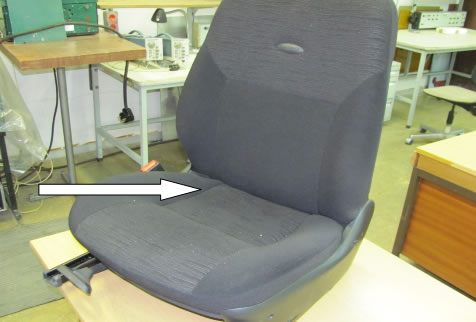
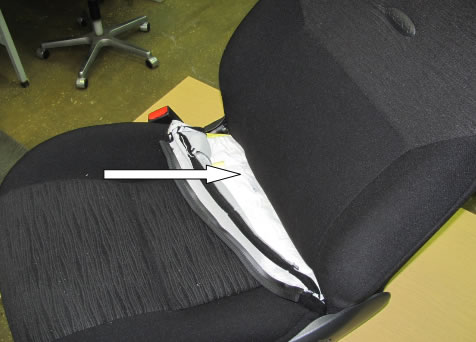
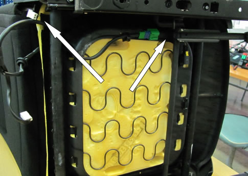
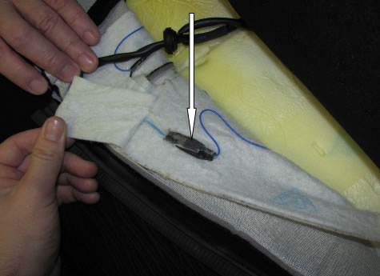
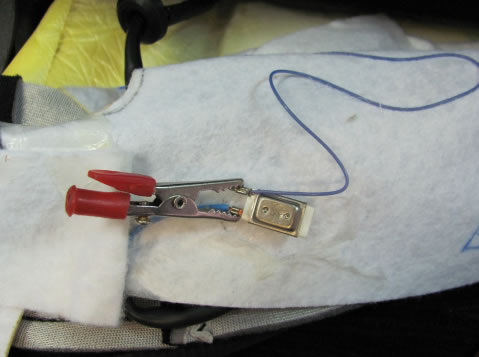
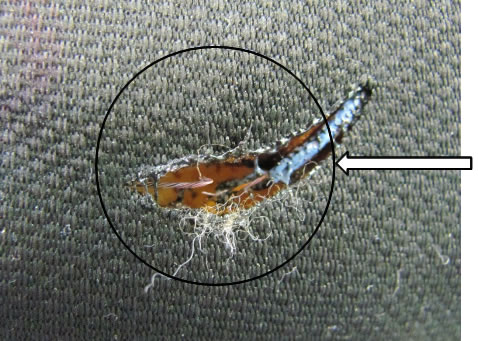
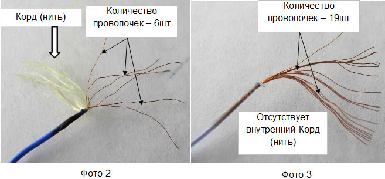

Рекомендации по поиску вероятной причины неисправности подогрева сидения(данная неисправность наиболее вероятна на LADA KALINA NEW выпущенных в 2013 году с подогревом сидений производства ООО «Теплодом») 1. Отключить обогреватель сидения от бортовой сети автомобиля и подключить прибор измеряющий сопротивление цепи (мультиметр). Исправный нагревательный элемент должен иметь сопротивление цепи согласно конструкторской документации ≤ 4Ом. 2. Если прибор показывает обрыв цепи, то отключаем обогреватель спинки сидения и вместо него устанавливаем перемычку («крокодильчик»).  3. Если прибор также показывает обрыв цепи, то необходимо осмотреть термореле на наличие внешнего повреждения. Стрелкой указано место расположения термореле.  4. Частично снимаем обивку подушки сидения.  5. Освобождаем отвод обогревателя.  6. Вытянув отвод отгибаем обогреватель подушки и сняв защитный слой открываем доступ к термореле.  7. Снимаем защитную трубку с термореле и при отсутствии видимых повреждений вторым «крокодильчиком» перемыкаем его контакты. В случае наличия цепи (сопротивление ≤ 8Ом) зафиксировать «неисправность термореле». Если прибор показывает обрыв цепи, то обогреватель неисправен.  Рекомендации по определению количество проволок в нагревательном элементе подогрева сидения(Обогреватель сиденья производства ООО «Теплодом») 1. На поврежденном сиденье визуально определяется место прогара обивки сиденья  2. В зоне прогара определяется количество проволок нагревательного элемента. 3. Отличительная особенность используемого нагревательного элемента:
 |